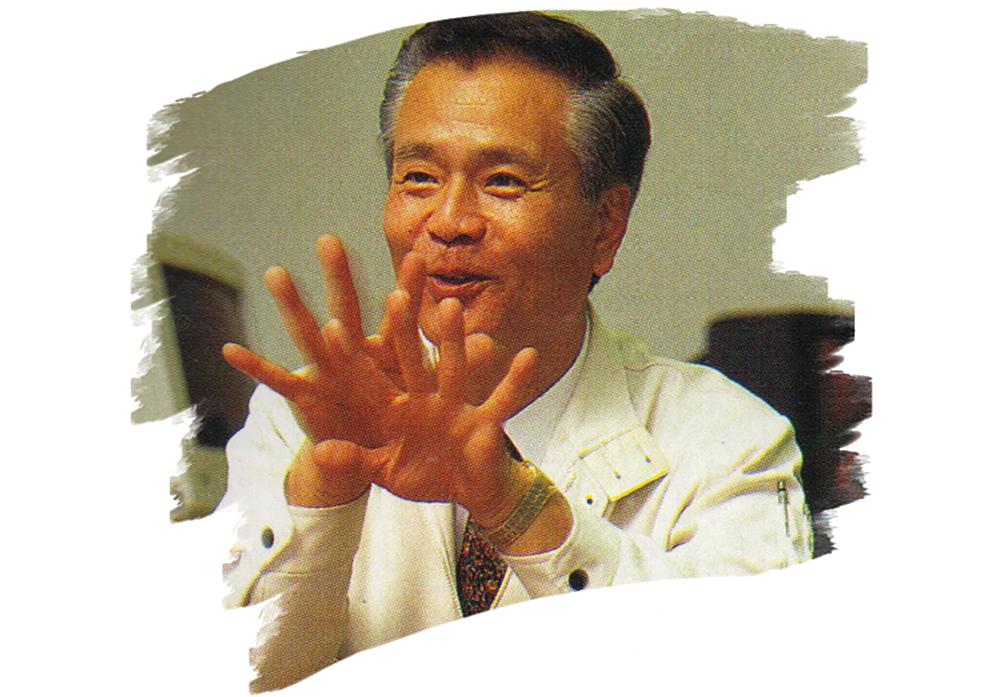

Gunpei Yokoi was a prolific designer of novelties, toys, and video games. His 30-year career was instrumental to Nintendo's rise to international prominence.
1941: Born in Kyoto, Japan.
1965: Received degree in electronics from Doshisha University in Kyoto. Hired by Nintendo to maintain machines that manufacture Hanafuda (flower cards). At this time,
Nintendo is largely a playing card manufacturer.
1966: Hiroshi Yamauchi, president of Nintendo, visits the factory where Yokoi works. Yamuichi notices a toy that he made for his own amusement, an extending arm called
the 'Ultra Hand.' Yamuichi orders it to be rushed to production in time for the Christmas season, where the Ultra Hand becomes enormously successful.
1967: After being placed in the toy division, Yokoi invents a baseball throwing device called the Ultra Machine.
1969: Yokoi designs a novelty device marketed as a 'love tester,' which purports to measure a romantic couple's compatibility. It was Nintendo's first product to feature
electronic components and the first to be marketed outside of Japan.
1972: Demand for physical toys and games declines due to the ongoing global oil crisis. Nintendo makes a business decision to open a division dedicated to videogames. Yokoi is
assigned to work in the Research and Development department. The team, later known as 'Nintendo R&D1,' would go on to produce many successful titles and projects.
1980: The first 'Game & Watch' product is released under Yokoi's supervision. The Game & Watch is a handheld device with an LCD screen. Each unit plays one dedicated rudimentary
game. The Game & Watch is the first game to utilize the cross-shaped directional pad that would become ubiquitous on game controllers.
1981: Gunpei Yokoi is assigned to oversee the production of the Donkey Kong arcade game, intending to emulate NAMCO's success with Pac-Man.
1983: Mario Bros is released to arcades with Yokoi as the producer.
1985: He releases the R.O.B. (Robotic Operating Buddy) a robot-shaped hardware compatible with the Ninendo Entertainment System (NES).
1985-1988: R&D1 releases several succesful titles on the NES: Duck Hunt, Excitebike, Metroid, Kid Icarus, Ice Climber, and more.
1989: After several years of development, Yokoi and R&D1 release Nintendos most popular product to date: the Game Boy. Eventually selling nearly 120 million units,
it combines elements of Game & Watch and the NES and launches with successful titles such as Super Mario Land and Tetris.
1995: Despite Yokoi's protests, the Virtual Boy, intended as a successor to the Game Boy, is released by R&D1. It is rushed to market so that more resources can be dedicated to Nintendos
3D videogame console: the Nintendo 64. The Virtual Boy is received poorly, selling less than a million units.
1996: After the release of a streamlined 'Game Boy Pocket' product, Yokoi retires from Nintendo.
1997: In the aftermath of a minor auto accident, Yokoi exits his vehicle to inspect for damage and is struck and killed by another vehicle at the age of 56 years old.